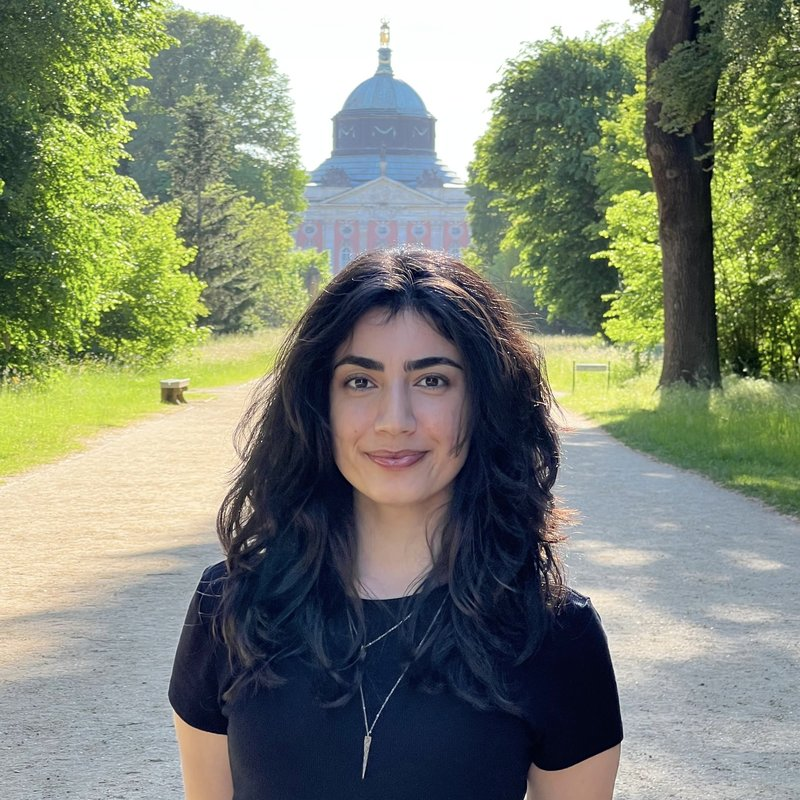

Cognitive Science · Berlin
Ayşe Şahin
An experimental psychologist moving into cognitive neuroscience.
M.Sc. Cognitive Science | University of Potsdam
Research Assistant | Computational Psychology Lab, TU Berlin



01 About
Between mind
& brain
I studied psychology in Türkiye and spent my degree in experimental labs - behavioral studies, survey work, and a stint in qualitative and social psychology research in Spain and the Netherlands. In 2026, I joined Prof. Marianne Maertens’s Computational Psychology Lab at TU Berlin, where I work on psychophysics and computational modeling of visual perception.
My interests have gradually moved from experimental social psychology into cognitive science, converging now on neuroimaging and neurotechnology, EEG and brain–computer interfaces especially. I’m using this phase to find the questions worth committing to.
02research Experience
Research
Five years across five domains - vision, social cognition, evolutionary psychology, disability studies, developmental fieldwork. Different questions, same craft: designing the experiment, running the humans, analyzing the data.
Visual Perception · Psychophysics
Graduate Research Assistant · Computational Psychology Lab, TU Berlin
I assist with the implementation and execution of various experiments on perceptual completion phenomena, examining whether effects established under controlled conditions persist in naturalistic, real-world settings.
Disability, Reproduction & Narrative
Erasmus+ Traineeship · Social Psychology, UAB Barcelona
Applied narrative analysis to the reproductive choices of women with disabilities. Built proficiency in ATLAS.ti for coding, thematic analysis, and narrative mapping; engaged with critical perspectives on disability and reproduction.
The Threat of Gender & Masculinity on Power Relations and Beauty Norms
Research Assistant · TÜBİTAK 1002-A Scholarship · Ege University
Joined Dr. Ece Akça-Doğan's 1002-A project under a scholarship from TÜBİTAK, Turkey’s national science-funding agency. Designed and implemented experiments in SoSci Survey, developed experimental materials, coordinated face-to-face and online data collection, and contributed to cleaning and analyzing quantitative data in SPSS.
Independent sub-study & poster
Threatened Masculinity: An Examination of Sexist and Objectifying Attitudes
Şahin, A. & Akça-Doğan, E. (2024, December). Poster presented at the 5th National Social Psychology Conference, Başkent University, Ankara. Abstract published in the conference proceedings (Yeniçeri, Ed., 2025, p. 176; ISBN 978-625-93507-9-0).
I proposed this study within the larger 1002-A project, designed the manipulation, collected the data (N = 96), ran the analysis, and presented it at the 5th National Social Psychology Conference.
View abstract in proceedings (PDF, p. 176) → View poster on Academia →Behavioral Immune System
Research Assistant · Ege Social & Evolutionary Psychology Lab · STAR Scholarship
Contributed to the TÜBİTAK project Social Consequences and Genetic Moderators of the Behavioral Immune System. Programmed OpenSesame experiments, collected behavioral data from 100+ participants, and coordinated with a molecular microbiology team handling saliva samples for DNA analysis.
KULE Project · Family–School Interactions in Early Childhood
Volunteer Research Assistant · TÜBİTAK field study, Izmir
Contributed to a national TÜBİTAK field study investigating how family and school interactions shape preschool child development. Conducted structured interviews with children aged 4–6, administered phone surveys with parents and teachers, and prepared data for analysis.
03 Background
Education & Skills
Education
Scholarships
Training
EEG signal processing, ML for BCI, mobile EEG paradigms; hands-on hardware.May 2026
Skills
· SoSci Survey · ATLAS.ti
· Quantitative & qualitative analysis · EEG fundamentals
04 Teaching & Service
Teaching & Service
2024
Teaching Assistant | Experimental Psychology
Ege UniversityMentored sophomore students in designing research proposals, supervised in-lab data collection with live participants, and reviewed lab reports.
2023
Intern Psychologist
Ministry of Family & Social Services, TürkiyePresidential National Internship Program. Provided psychological support to survivors of violence, conducting intake and follow-up interviews and coordinating care with the clinical team.
02/2023 – 06/2023
Intercultural Adaptation Project
Enter Company, Eindhoven, NetherlandsLed a team of exchange students to design and deliver three workshops promoting cross-cultural collaboration in an international organization.
2021-22
Safe Relationships Project
Ministry of Education & Ege UniversityDesigned and led awareness seminars for high-school students on recognizing psychological violence in romantic relationships.
05 Get in touch
Let's fire & wire together!
I’m looking for a PhD-track position in cognitive neuroscience, and I’m always glad to talk research, swap ideas, or share work.